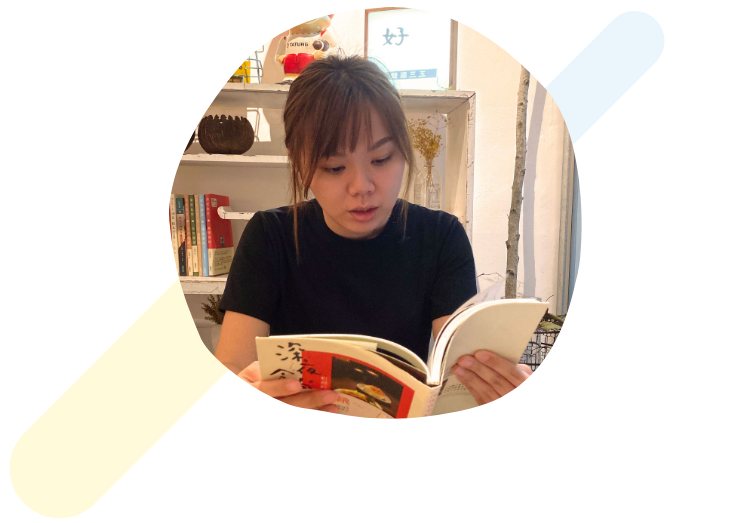

經歷
UI/UX設計師
易飛網國際旅行社有限公司｜Sep 2023 - Now
- 負責官網的視覺設計，提升整體一致性與美感
- 建立Design System，統一風格與元件，提高設計與開發效率
- 製作Prototype，優化操作流程，提升使用直覺性
- 優化使用流程，減少操作障礙，提升使用便利性
- 研究競品，提出更佳設計方案
- 收集並分析使用者回饋，持續優化體驗
- 與工程師合作，確保設計順利實現
UI設計師
傑航網路科技有限公司｜April 2019 - June 2023
- 網站前後台設計及App設計
- 熟悉RWD網頁設計架構
- 規劃設計UI Guildline
- UI操作流程規劃和原型Prototype製作
- html / css 基礎能力，可協助切版及溝通
- 協助網站視覺banner設計
- 曾參與過0-1開發開發到上線經驗
視覺設計師
心丰科技公司 - 扌石創意設計｜August 2015 - March 2019
- 負責平面設計、包裝設計、網站與APP介面設計，確保視覺與操作一致性
- 兼任專案經理，負責接洽客戶，整合需求，確保專案順利進行
- 協助設計團隊執行專案，提升設計效率與專案執行力
- 與 財團法人資訊工業策進會（大數據所）合作，擔任駐點設計師
- 參與UI設計，優化使用者體驗
- 進行平面設計，支援行銷與品牌需求
學歷
- 亞東技術學院 ｜工商業設計系
- 鶯歌高職 ｜美術工藝科
比賽、參展經歷
- 2017 臺灣國際文化創意產業博覽會 ｜參展
- 2015 新北市文化局 / 104年度文創藝術、設計媒合產業補助計畫 ｜獲選補助
- 2015 台灣設計師週 - 設計星勢力RISING STAR｜參展
- 2015 新創無垠 - 新北市文化創意產業成果展｜參展